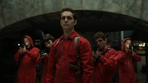

Sinopsis
La serie, que cuenta con cuatro temporadas, trata sobre el espectacular asalto, por parte de una banda de delincuentes, de la Fábrica Nacional de la Moneda y Timbre, en las dos primeras entregas, y del Banco de España, en la tercera y cuarta. La combinación de los géneros de acción, intriga y thriller junto a su atractivo argumento y el peculiar carácter de sus personajes la convierten en la serie española más exitosa de todos los tiempos. La serie parte de una idea original que se mantiene presente en las dos temporadas. La premisa gira en torno al personaje de Sergio Marquina, alias El Profesor, un hombre misterioso que ha planeado desde pequeño de forma meticulosa el atraco en la Fábrica Nacional de la Moneda y Timbre, lo que supone el mayor hurto jamás producido.Su objetivo es reclutar a un grupo de criminales, que no tengan nada que perder en la vida, para adentrarse en el edificio y mantenerse dentro durante varios días para conseguir fabricar 2.400 millones de euros. En la tercera y la cuarta temporada varía la trama principal y, esta vez, el objetivo de la banda es asaltar el Banco de España para hacerse con el oro que se encuentra dentro de la cámara acorazada. Sergio Marquina (alias El Profesor), un hombre que pasó su infancia hospitalizado a causa de una enfermedad, ha planeado de forma minuciosa el atraco de la Fábrica Nacional de la Moneda y Timbre. Para ello, un grupo de ocho delincuentes, todos con nombre ficticio y con el rostro enmascarado con la cara de Salvador Dalí, ocupará el edificio durante 11 días con 67 rehenes (entre ellos la hija del embajador británico), para conseguir fabricar 2.400 millones de euros. Tras cinco meses de formación meticulosa sobre el atraco, los asaltantes entran en el Museo Casa de la Moneda de Madrid, donde manipulan la tecnología para impedir cualquier tipo de comunicación externa y secuestran a los allí presentes, entre los que se encuentran los trabajadores de la Fábrica y los alumnos de un prestigioso instituto de Madrid.
Temporadas
 La segunda entrega de las serie complica los planes de El Profesor y desarrolla cómo será el desenlace del atraco en la Fábrica de la Moneda. La policía científica descubre la casa de campo de Toledo donde el líder formó a los atracadores durante cinco meses y también consiguen restos de ADN. Después Raquel descubre la identidad de El Profesor. La policía también está a punto de descubrir quién es el líder del grupo. Mientras, El Profesor no puede comunicarse con el interior de la Fábrica. Allí, secuestrados y secuestradores pierden los nervios y la situación desemboca con Tokio, una de las delincuentes, expulsada de la Fábrica y detenida por la policía.Entretanto, El Profesor lucha por mantener a salvo su plan y su relación con la inspectora. Sin embargo, ésta lo tortura cuando se entera de su verdadera identidad. Finalmente Raquel, acusada de cómplice, es apartada del caso y la policía entra en la Fábrica Nacional de la Moneda. Tras un tiroteo en el interior del edificio, protagonizado por la banda y la policía, los atracadores consiguen salir con el motín por un túnel que comunica con la guarida de El Profesor.